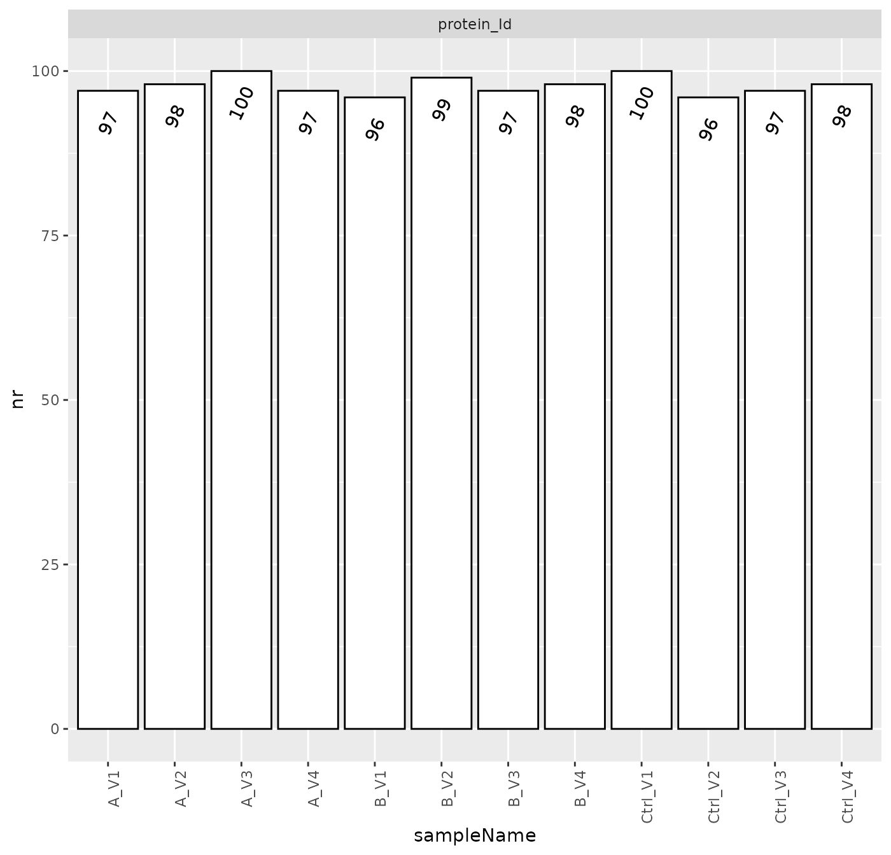
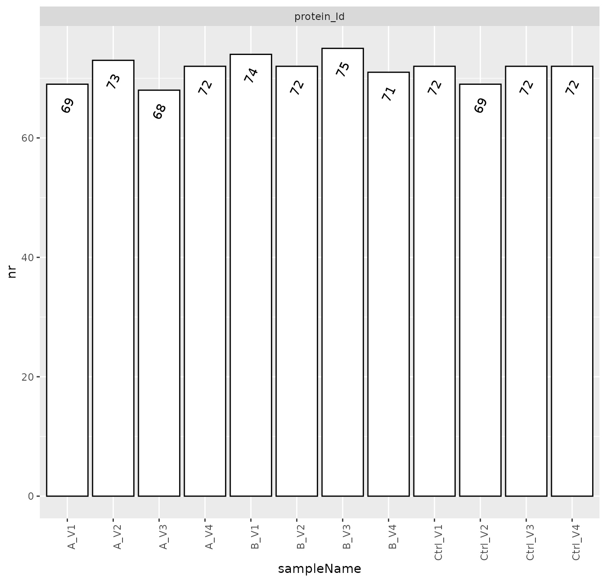
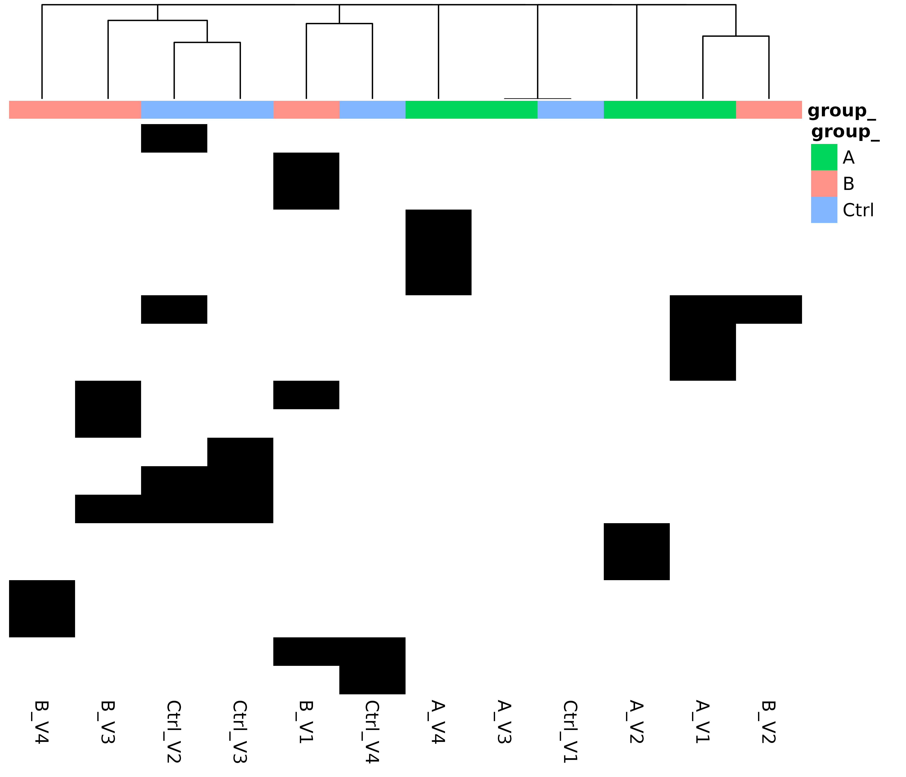
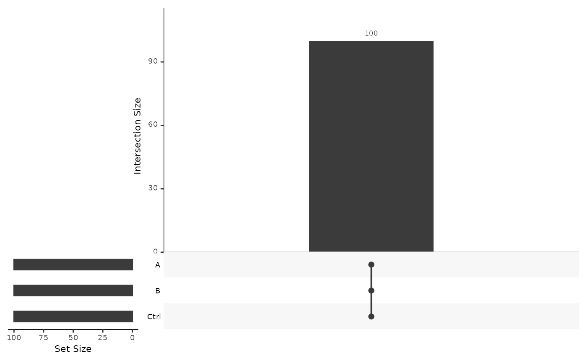
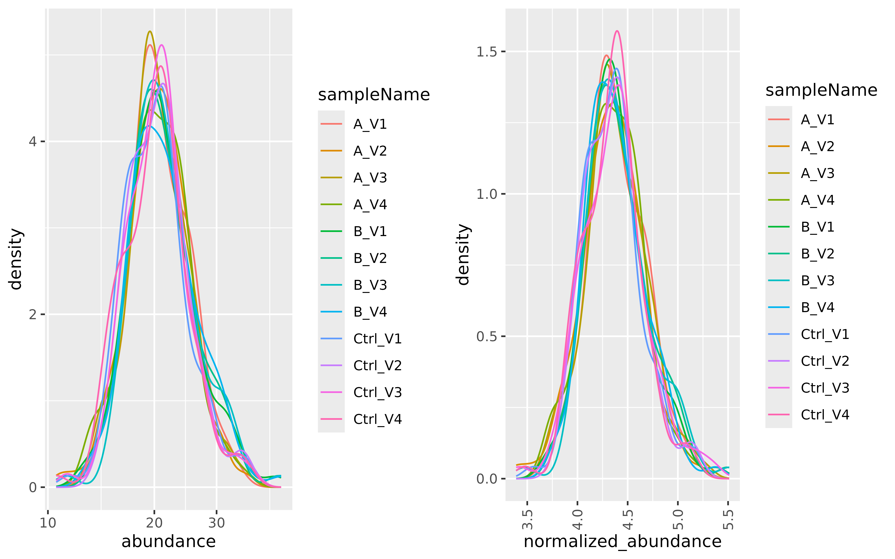
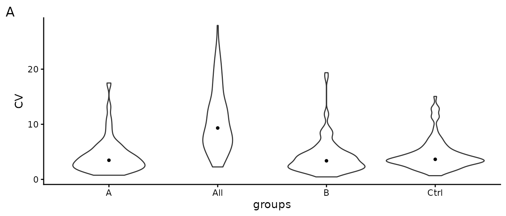
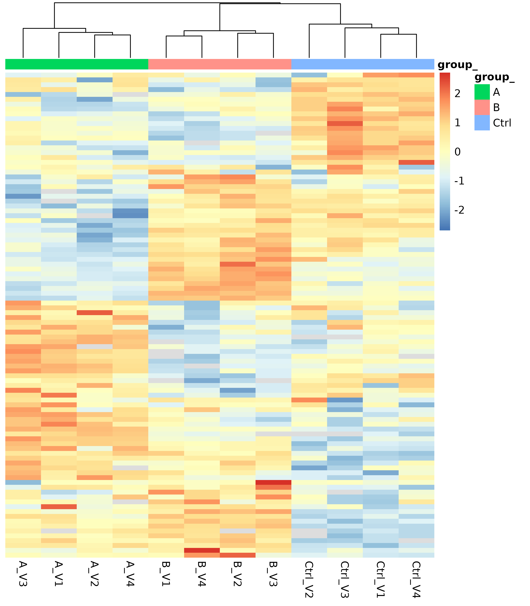
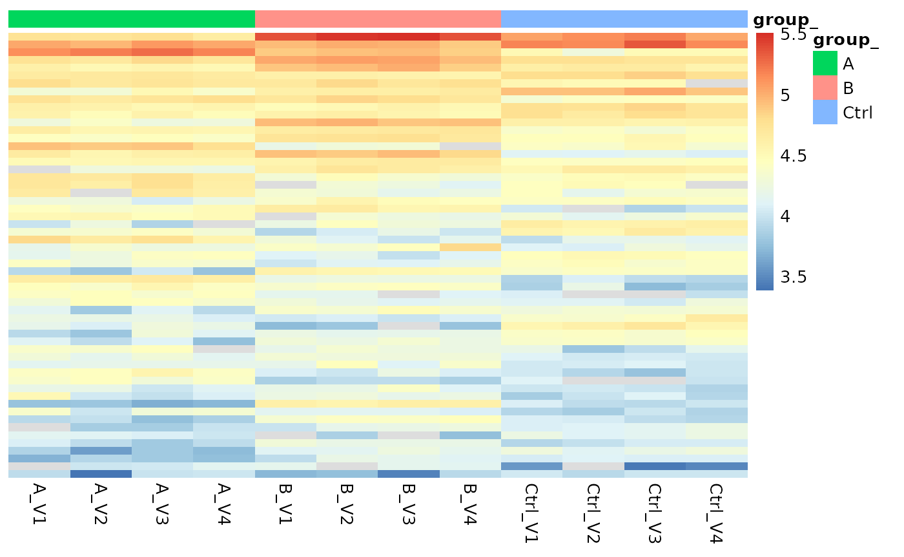
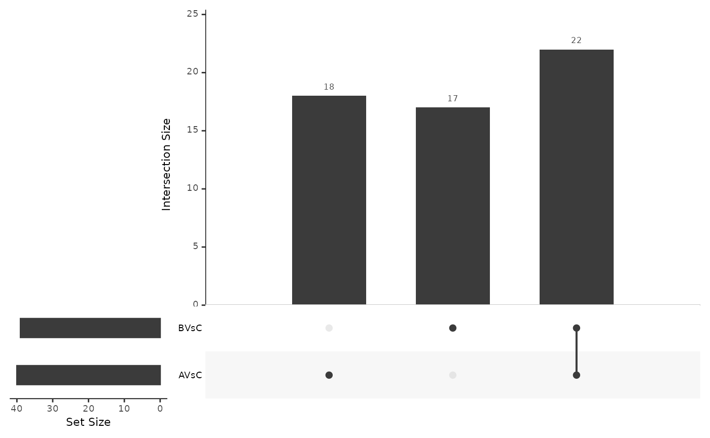

Differential Expression Analysis.
Functional Genomics Center Zurich
23 March, 2026
Source:vignettes/Grp2Analysis_V2_R6.Rmd
Grp2Analysis_V2_R6.RmdB-fabric related information
This report is stored in the LIMS system bfabric (Panse, Trachsel, and Türker 2022) in project: , order: , with the workunit name: .
The protein identification and quantification were performed using: DIANN. The input file can be downloaded from here: https://fgcz-bfabric.uzh.ch/bfabric/. The set of parameters used to run the quantification software can be retrieved from the b-fabric workunit to which this file belongs.
Introduction
The differential expression analysis verifies if the difference between normalized empirical protein abundances measured in two groups is significantly non-zero. To make the test as sensitive and specific as possible, the methods used to measure (Taverna and Gaspari 2021) and estimate protein abundances (Grossmann et al. 2010) are optimized to minimize the biochemical and technical variance. In addition, these empirical abundances are further transformed and scaled to make them compatible with the statistical test procedure (Välikangas, Suomi, and Elo 2018). Therefore, we obtain a scale free transformed normalized protein abundances for a sample.
For unpaired experiments the difference between group and , for a specific protein is estimated by:
where - is the normalized protein abundance of sample in the group of samples, while is the protein abundance of sample in group of samples.
For paired experiments, the difference is estimated by:
where is the number of subjects, each treated with and .
Of note, when comparing two samples and the difference of logarithms equals the logarithm of the ratio (exponent rule):
It is called the -ratio or fold-change (logFC).
The estimated differences have an associated error . Therefore, the differential expression analysis must test if the difference is significantly nonzero.
We run a set of functions implemented in the R package [prolfqua] (Wolski et al. 2023) to filter and normalize the data, generate visualizations, and to compute differential expression analysis. To further improve the power of the differential expression test the protein variances are moderated (Smyth 2004), i.e. the individual protein variances are updated using a variance prior estimated from all the proteins in the experiment.
Results
Table @ref(tab:samples) shows the number of samples assigned to each group while Table @ref(tab:annotation) shows the names of the files assigned to the group.
| group_ | # samples |
|---|---|
| A | 4 |
| B | 4 |
| Ctrl | 4 |
| sample | sampleName | group_ | nr_1 | nr_2 |
|---|---|---|---|---|
| A_V1 | A_V1 | A | 97 | 69 |
| A_V2 | A_V2 | A | 98 | 73 |
| A_V3 | A_V3 | A | 100 | 68 |
| A_V4 | A_V4 | A | 97 | 72 |
| B_V1 | B_V1 | B | 96 | 74 |
| B_V2 | B_V2 | B | 99 | 72 |
| B_V3 | B_V3 | B | 97 | 75 |
| B_V4 | B_V4 | B | 98 | 71 |
| Ctrl_V1 | Ctrl_V1 | Ctrl | 100 | 72 |
| Ctrl_V2 | Ctrl_V2 | Ctrl | 96 | 69 |
| Ctrl_V3 | Ctrl_V3 | Ctrl | 97 | 72 |
| Ctrl_V4 | Ctrl_V4 | Ctrl | 98 | 72 |
Peptide and Protein identification
The protein matrix is filtered using the following threshold:
- Minimum number of peptides / protein: 1.
The overall number of proteins including contaminant proteins in this experiment is: 100. The percentage of contaminant proteins is:0 %. The percentage of false positive identifications (Decoy sequences) is 0 %.
We keep the contaminant proteins because, for some experiments, these contaminants are relevant. However, they can be recognized since their identifiers start with zz or CON. We also keep the decoy sequences because they allow us to re-estimate the proportion of falsely identified proteins in the list of differentially expressed proteins, which might differ from that of entire dataset. The identifiers of the decoy proteins start with REV or rev.
Figure @ref(fig:nrPerSample) shows the number of quantified proteins with one or more peptides per sample.

Number of identified proteins across samples.
Figure @ref(fig:nrPerSample2) shows the number of quantified proteins with two or more peptides per sample.

Number of identified proteins across samples.
Missing Value Analysis
The absence of a protein measurement in a sample might be biologically relevant or might point to technical problems. Significant differences in the set of proteins observed in the samples within a group typically indicate either technical problems or excessive biological variability. If one sample out of ten has a different set of proteins, it is likely an outlier and can be removed from the analysis. If the differences between the groups are significant but within the groups are small, this might systematically bias the difference estimates, i.e., produce false-positive or false-negative test results.
A dichotomous view of the data can be constructed by transforming protein abundance estimates into present/absent calls (Figure @ref(fig:naHeat) ). The heatmap shows only proteins with at least one missing value. There are 20 proteins with at least one missing value in the data, which is (20 %).
We expect that samples in the same group are more similar and cluster together, i.e., they are in the same branch of the dendrogram.
(ref:naHeat) Protein abundance heatmap (rows indicate proteins, columns indicate samples) showing missing protein abundance estimates across the data set. Rows and columns are grouped based on the Minkowski distance using hierarchical clustering. White: Protein is observed, black: Protein is not observed.

(ref:naHeat)
Using Figure @ref(fig:vennProteins) we examine if we see the same proteins in each group. We say a protein is unobserved in the group if it is absent in all samples and is present otherwise. A significant overlap among groups allows more precise estimation of the protein abundance differences between the groups.
(ref:vennProteins) Venn diagram showing the number of proteins present in each group and in all possible intersections among groups.

(ref:vennProteins)
Protein Abundance Analysis
The density plot (Figure @ref(fig:normalized) left panel) displays the protein abundance distribution for all data set samples. Major differences between samples could indicate that the individual protein abundance values are affected by technical biases. These biases might need to be corrected to separate them from biological effects. The right panel of Figure @ref(fig:normalized) shows the distribution of the transformed and scaled normalized empirical protein abundances. Normalization is applied to remove systematic differences in protein abundances due to different sample concentrations or amounts of sample loaded on a column. However, in the presence of a large proportion of missing data, normalization potentially amplifies systematic errors.
To do this the z-score of the transformed protein abundances are computed. Because we need to estimate the protein differences on the original scale, we have to multiply the -score by the average standard deviation of all the samples in the experiment. After normalization all samples have an equal mean and variance and a similar distribution.
(ref:normalized) Kernel density function showing the distribution of protein abundances in all samples. Left panel: Empirical protein abundance of all samples in the dataset. Right panel: Normalized empirical protein abundances of all samples in the dataset.

(ref:normalized)
The median coefficient of variation (CV) of a group of samples or all samples in the dataset, can be used to compare the experiment with other experiments (Piehowski et al. 2013). For example, the median CV for high-performance liquid chromatography experiments ranges from 2% to 35% depending on the biological samples studied, the chromatography method used, label-free or labelled quantification (Taverna and Gaspari 2021).
Figure @ref(fig:SDViolin) shows the coefficients of variation (CV) for all proteins computed on non-normalized data. Ideally the within group CV should be smaller than the CV of all samples.
(ref:SDViolin) Distribution of coefficient of variation (CV) within each group and in the entire experiment (all).

(ref:SDViolin)
Table @ref(tab:CVtable) shows the median CV of all groups and across all samples (all).
| what | A | B | Ctrl | All |
|---|---|---|---|---|
| CV | 3.47 | 3.37 | 3.64 | 9.32 |
The protein abundance heatmap (Figure @ref(fig:heatmap)) groups the protein and samples using unsupervised hierarchical clustering. Distances between proteins and samples are computed using normalized protein abundances. Proteins with a large proportion of missing observations are not shown in this heatmap, because for these proteins no distance can be computed. Proteins and samples showing similar abundances are grouped and shown in adjacent rows and columns respectively.
(ref:heatmap) Protein abundance heatmap (rows indicate proteins, columns indicate samples) showing the row scaled transformed protein abundance value. Co-clustering (hierarchical complete linkage, euclidean distance) of samples and proteins was used.

(ref:heatmap)
We use principal component analysis (PCA) to transform the high-dimensional space defined by all proteins into a two-dimensional one containing most of the information. Plot @ref(fig:pca) shows the location of the samples according to the first and second principal component, which explain most of the variance in the data. Samples close in the PCA plot are more similar than those farther apart.
(ref:pca) Plot of first and second principal component (PC1 and PC2) of principal component analysis (PCA). Normalized abundances were used as input.
(ref:pca)
Differential Expression Analysis
The method used to test for differential expression consists of several steps: First a linear model that explains the observed protein abundances using the grouping of the samples is fitted using the R function lm to each protein:
normalized_abundance ~ group_.
Secondly, the difference between the groups is computed (Table @ref(tab:contrtable)).
| name | contrast |
|---|---|
| AVsC | group_A - group_Ctrl |
| BVsC | group_B - group_Ctrl |
and a null hypothesis significance test (NHST) is conducted, where the null hypothesis is that the protein is not differentially expressed (Faraway 2004).
If there are no abundances measured in one of the groups for some
proteins, we assume the observations are missing because the protein
abundance is below the detection limit. Therefore, we estimate the
detection limit using the mean of the
smallest group averages. Furthermore, to make it explicit for which
proteins we did impute the unobserved group mean, we label them with
Imputed_Mean (see table in Figures @ref(fig:tableAllProt)
column modelName) and visualize them with gray dots in
Figure @ref(fig:volcanoplot). Finally, those proteins with a
sufficiently large number of observations are labeled with
Linear_Model_Moderated.
Next, to increase the power of the analysis variance shrinkage is performed (Smyth 2004). Finally, the false discovery rate (FDR) using the Benjamini-Hochberg procedure is computed (Benjamini and Hochberg 1995). The FDR is the expected proportion of false discoveries in a list of proteins, and can be used to select candidates for follow up experiments. FDR thresholds commonly used are 5, 10 or 25%. By filtering the proteins using an FDR threshold of 10 % we can expect this proportion of false positives in the list and 90 % truly differentially expressed proteins. Because we do not know which of them are true positives follow up experiments are necessary.
The table (Figure @ref(fig:tableAllProt)) summarizes the differential expression analysis results by providing the following information:
- protein_Id - unique protein identifier
- description - information about the protein provided in the FASTA database
- contrast - name of the comparison
- modelName - name of the method to estimate differences : Imputed_mean or Linear_Model_Moderated
- FDR - false discovery rate
- diff - difference between groups.
The volcano plot @ref(fig:volcanoplot) helps to identify proteins with large differences among groups and a low FDR. The significance dimension is a transformed FDR, i.e., small values of FDR become large after transformation. Promising candidate proteins are found in the upper right and left sector of the plot.
Differential expression analysis results of all proteins.
(ref:volcanoplot) Volcano plot showing transformed FDR as function of the difference between groups. The red line indicates the of FDR = 0.1, while the green lines represent the difference of minus and plus 0.2. With orange dots differences and FDRs estimated using missing value imputation are shown.
(ref:volcanoplot)
Differentially Expressed Proteins
Here we use the FDR threshold of 0.1 and a difference threshold of 0.2 to select differentially expressed proteins. Table @ref(tab:nrsignificant) summarizes the number of significant calls.
| contrast | n | Significant | Not Significant |
|---|---|---|---|
| AVsC | 100 | 40 | 60 |
| BVsC | 100 | 39 | 61 |
The table shown in Figure @ref(fig:SigPrey) lists all the significant proteins.
(ref:SigPrey) Significant proteins obtained by applying the difference and FDR thresholds.
(ref:SigPrey)
Furthermore, Figure @ref(fig:sigroteins) shows a heatmap of log2 transformed protein abundances of all significant calls.
(ref:sigroteins) Heatmap showing the transformed protein abundances for proteins which pass the FDR and difference thresholds.

(ref:sigroteins)
(ref:vennDiagramSig) Venn diagram showing the number of significant proteins for each contrast and their intersections.

(ref:vennDiagramSig)
Additional Analysis
The zip file contains an Excel file DE_Groups_vs_Controls.xlsx. All the figures can be recreated using the data in the excel file. The Excel file contains the following spreadsheets:
- annotation - the annotation of the samples in the experiment
- raw_abundances table with empirical protein abundances.
- normalized_abundances table with normalized protein abundances.
- raw_abundances_matrix A table where each column represents a sample and each row represents a protein and the cells store the empirical protein abundances.
- normalized_abundances_matrix A table where each column represents a sample and each row represents a protein and the cells store the empirical protein abundances.
- diff_exp_analysis A table with the results of the differential expression analysis. For each protein there is a row containing the estimated difference between the groups, the false discovery rate FDR, the 95% confidence interval, the posterior degrees of freedom.
- missing_information - spreadsheet containing information if a protein is present (1) or absent in a group (0).
- protein_variances - spreadsheet which for each protein shows the variance (var) or standard deviation (sd) within a group, the number of samples (n) and the number of observations (not_na) as well as the group average intensity (mean).
The data can be used to perform functional enrichment analysis (Monti et al. 2019). To compare the obtained results with known protein interactions we recommend the string-db.org (Szklarczyk et al. 2017), which is a curated database of protein-protein interaction networks for a large variety of organisms. To simplify the data upload to string-db we include text files containing the uniprot ids:
-
ORA_background.txtall proteins. -
ORA_<contrast_name>.txtproteins accepted with the FDR and difference threshold.
Other web applications allowing to run over representation analysis (ORA) (Monti et al. 2019) are:
- DAVID Bioinformatics Resource
- WEB-based GEne SeT AnaLysis Toolkit (Wang et al. 2017)
Furthermore, protein IDs sorted by t-statistic can then be subjected to gene set enrichment analysis (GSEA) (Subramanian et al. 2005). To simplify running GSEA, we provide the file:
GSEA_<contrast_name>.rnk
This file can be used with the webgestalt web application or used with the GSEA application from gsea-msigdb
For questions and improvement suggestions, with respect to this report, please contact protinf@fgcz.uzh.ch.
Session Information
R version 4.5.3 (2026-03-11)
Platform: x86_64-pc-linux-gnu
locale: LC_CTYPE=C.UTF-8, LC_NUMERIC=C, LC_TIME=C.UTF-8, LC_COLLATE=C.UTF-8, LC_MONETARY=C.UTF-8, LC_MESSAGES=C.UTF-8, LC_PAPER=C.UTF-8, LC_NAME=C, LC_ADDRESS=C, LC_TELEPHONE=C, LC_MEASUREMENT=C.UTF-8 and LC_IDENTIFICATION=C
attached base packages: stats, graphics, grDevices, utils, datasets, methods and base
other attached packages: dplyr(v.1.2.0)
loaded via a namespace (and not attached): gridExtra(v.2.3), writexl(v.1.5.4), logger(v.0.4.1), readxl(v.1.4.5), rlang(v.1.1.7), magrittr(v.2.0.4), otel(v.0.2.0), matrixStats(v.1.5.0), compiler(v.4.5.3), systemfonts(v.1.3.2), vctrs(v.0.7.2), stringr(v.1.6.0), crayon(v.1.5.3), pkgconfig(v.2.0.3), fastmap(v.1.2.0), XVector(v.0.50.0), labeling(v.0.4.3), pander(v.0.6.6), promises(v.1.5.0), rmarkdown(v.2.30), tzdb(v.0.5.0), preprocessCore(v.1.72.0), ragg(v.1.5.1), UpSetR(v.1.4.0), purrr(v.1.2.1), bit(v.4.6.0), xfun(v.0.57), cachem(v.1.1.0), jsonlite(v.2.0.0), progress(v.1.2.3), later(v.1.4.8), DelayedArray(v.0.36.0), prettyunits(v.1.2.0), R6(v.2.6.1), bslib(v.0.10.0), stringi(v.1.8.7), RColorBrewer(v.1.1-3), limma(v.3.66.0), GenomicRanges(v.1.62.1), jquerylib(v.0.1.4), cellranger(v.1.1.0), Rcpp(v.1.1.1), Seqinfo(v.1.0.0), bookdown(v.0.46), assertthat(v.0.2.1), SummarizedExperiment(v.1.40.0), knitr(v.1.51), lobstr(v.1.2.0), readr(v.2.2.0), IRanges(v.2.44.0), httpuv(v.1.6.17), Matrix(v.1.7-4), tidyselect(v.1.2.1), abind(v.1.4-8), yaml(v.2.3.12), affy(v.1.88.0), lattice(v.0.22-9), tibble(v.3.3.1), plyr(v.1.8.9), shiny(v.1.13.0), Biobase(v.2.70.0), withr(v.3.0.2), S7(v.0.2.1), prolfqua(v.1.5.0), evaluate(v.1.0.5), desc(v.1.4.3), getopt(v.1.20.4), pillar(v.1.11.1), affyio(v.1.80.0), BiocManager(v.1.30.27), MatrixGenerics(v.1.22.0), DT(v.0.34.0), stats4(v.4.5.3), plotly(v.4.12.0), generics(v.0.1.4), dtplyr(v.1.3.3), S4Vectors(v.0.48.0), hms(v.1.1.4), ggplot2(v.4.0.2), scales(v.1.4.0), xtable(v.1.8-8), glue(v.1.8.0), pheatmap(v.1.0.13), lazyeval(v.0.2.2), tools(v.4.5.3), data.table(v.1.18.2.1), vsn(v.3.78.1), forcats(v.1.0.1), fs(v.2.0.0), grid(v.4.5.3), optparse(v.1.7.5), tidyr(v.1.3.2), crosstalk(v.1.2.2), cli(v.3.6.5), prolfquapp(v.2.0.11), textshaping(v.1.0.5), S4Arrays(v.1.10.1), viridisLite(v.0.4.3), arrow(v.23.0.1.1), gtable(v.0.3.6), sass(v.0.4.10), digest(v.0.6.39), BiocGenerics(v.0.56.0), SparseArray(v.1.10.9), ggrepel(v.0.9.8), htmlwidgets(v.1.6.4), farver(v.2.1.2), htmltools(v.0.5.9), pkgdown(v.2.2.0), lifecycle(v.1.0.5), httr(v.1.4.8), mime(v.0.13), statmod(v.1.5.1), bit64(v.4.6.0-1) and MASS(v.7.3-65)
References
Glossary
- groups - different treatments, genotypes etc.
- diff (difference) - it is the difference of the protein abundance estimate of two groups
- FDR - false discovery rate
This report was generated from the R Markdown template
Grp2Analysis_V2_R6.Rmd included in the
prolfquapp R package (version 2.0.11).